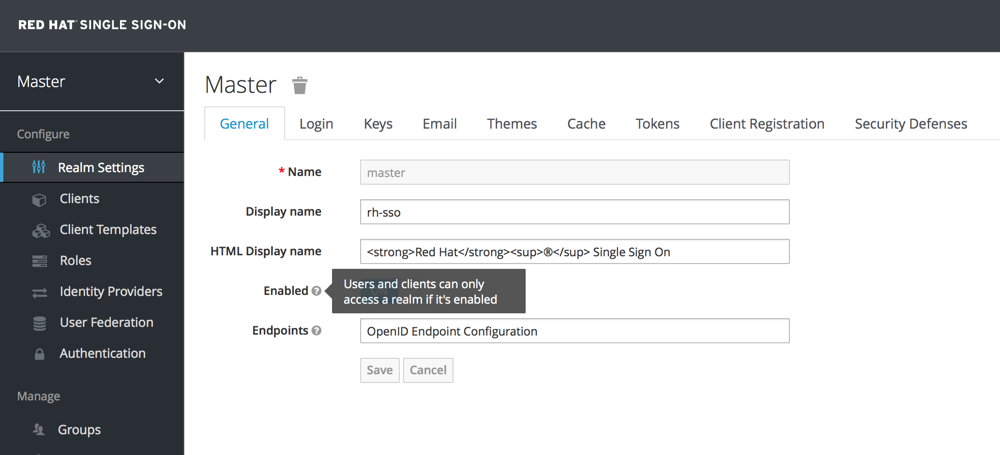
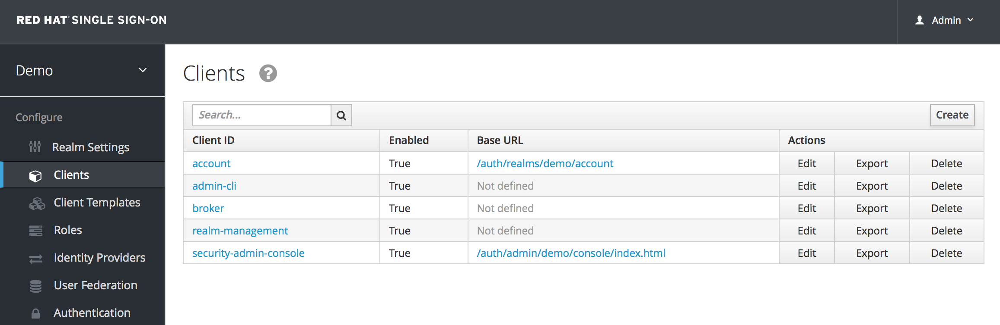
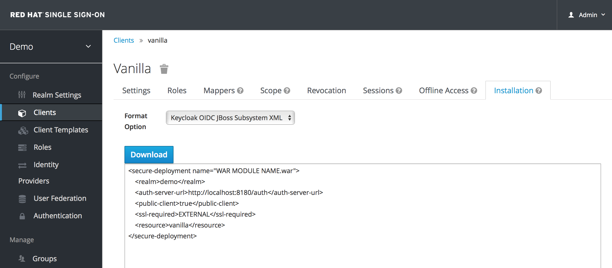

Getting Started Guide
For Use with Red Hat Single Sign-On 7.4
Abstract
Chapter 1. Overview
This guide helps you get started with Red Hat Single Sign-On. It covers server configuration and use of the default database. Advanced deployment options are not covered. For a deeper description of features or configuration options, consult the other reference guides.
Red Hat Single Sign-On is based on the open source Keycloak community project, which has its documentation here.
Chapter 2. Installing and Booting
This section describes how to boot a Red Hat Single Sign-On server in standalone mode, set up the initial admin user, and log in to the Red Hat Single Sign-On admin console.
2.1. Installing the Server
Download the Red Hat Single Sign-On Server:
- rh-sso-7.4.0.GA.zip
This file can be downloaded from the Red Hat customer portal.
The rh-sso-7.4.0.GA.zip file is the server-only distribution. It contains only the scripts and binaries to run the Red Hat Single Sign-On server.
Place the file in a directory you choose and use the unzip utility to unpack it, like this:
Linux/Unix
$ jar xf rh-sso-7.4.0.GA.zip
Windows
> unzip rh-sso-7.4.0.GA.zip
2.2. Booting the Server
To boot the Red Hat Single Sign-On server, go to the bin directory of the server distribution and run the standalone boot script:
Linux/Unix
$ cd bin $ ./standalone.sh
Windows
> ...\bin\standalone.bat
2.3. Creating the Admin Account
After the server boots, open http://localhost:8080/auth in your web browser. The welcome page will indicate that the server is running.
Enter a username and password to create an initial admin user.
This account will be permitted to log in to the master realm’s administration console, from which you will create realms and users and register applications to be secured by Red Hat Single Sign-On.
You can only create an initial admin user on the Welcome Page if you connect using localhost. This is a security precaution. You can create the initial admin user at the command line with the add-user-keycloak.sh script. For more information, see the Server Installation and Configuration Guide and the Server Administration Guide.
2.4. Log in to the Admin Console
After you create the initial admin account, use the following steps to log in to the admin console:
- Click the Administration Console link on the Welcome page or go directly to the console URL http://localhost:8080/auth/admin/
Type the username and password you created on the Welcome page to open the Red Hat Single Sign-On Admin Console.
Admin Console

Chapter 3. Creating a Realm and User
In this section you will create a new realm within the Red Hat Single Sign-On admin console and add a new user to that realm. You will use that new user to log in to your new realm and visit the built-in user account service that all users have access to.
3.1. Before You Start
Before you can create your first realm, complete the installation of Red Hat Single Sign-On and create the initial admin user as shown in Installing and Booting.
3.2. Creating a New Realm
To create a new realm, complete the following steps:
- Go to http://localhost:8080/auth/admin/ and log in to the Red Hat Single Sign-On Admin Console using the account you created in Install and Boot.
- From the Master drop-down menu, click Add Realm. When you are logged in to the master realm this drop-down menu lists all existing realms.
-
Type
demoin the Name field and click Create.
When the realm is created, the main admin console page opens. Notice the current realm is now set to demo. Switch between managing the master realm and the realm you just created by clicking entries in the Select realm drop-down menu.
3.3. Creating a New User
To create a new user in the demo realm, along with a temporary password for that new user, complete the following steps:
- From the menu, click Users to open the user list page.
- On the right side of the empty user list, click Add User to open the add user page.
-
Enter a name in the
Usernamefield; this is the only required field. Flip the Email Verified switch from Off to On and click Save to save the data and open the management page for the new user. - Click the Credentials tab to set a temporary password for the new user.
- Type a new password and confirm it. Click Reset Password to set the user password to the new one you specified.
This password is temporary and the user will be required to change it after the first login. To create a password that is persistent, flip the Temporary switch from On to Off before clicking Reset Password.
3.4. User Account Service
- After you create the new user, log out of the management console by opening the user drop-down menu and selecting Sign Out.
-
Go to http://localhost:8080/auth/realms/demo/account and log in to the User Account Service of your
demorealm with the user you just created. - Type the username and password you created. You will be required to create a permanent password after you successfully log in, unless you changed the Temporary setting to Off when you created the password.
The user account service page will open. Every user in a realm has access to this account service by default. From this page, you can update profile information and change or add additional credentials. For more information on this service see the Server Administration Guide.
Chapter 4. Securing a JBoss Servlet Application
This section describes how to secure a Java servlet application on the JBoss EAP application server by:
- Installing the Red Hat Single Sign-On client adapter on a JBoss EAP application server distribution
- Creating and registering a client application in the Red Hat Single Sign-On admin console
- Configuring the application to be secured by Red Hat Single Sign-On
4.1. Before You Start
Before you can secure a Java servlet application, you must complete the installation of Red Hat Single Sign-On and create the initial admin user as shown in Installing and Booting.
There is one caveat: Even though JBoss EAP is bundled with Red Hat Single Sign-On, you cannot use this as an application container. Instead, you must run a separate JBoss EAP instance on the same machine as the Red Hat Single Sign-On server to run your Java servlet application. Run the Red Hat Single Sign-On using a different port than the JBoss EAP, to avoid port conflicts.
To adjust the port used, change the value of the jboss.socket.binding.port-offset system property when starting the server from the command line. The value of this property is a number that will be added to the base value of every port opened by the Red Hat Single Sign-On server.
To start the Red Hat Single Sign-On server while also adjusting the port:
Linux/Unix
$ cd bin $ ./standalone.sh -Djboss.socket.binding.port-offset=100
Windows
> ...\bin\standalone.bat -Djboss.socket.binding.port-offset=100
After starting Red Hat Single Sign-On, go to http://localhost:8180/auth/admin/ to access the admin console.
4.2. Installing the Client Adapter
Download the JBoss EAP distribution and extract it from the compressed file into a directory on your machine.
Download the RH-SSO-7.4.0.GA-eap7-adapter.zip distribution.
Extract the contents of this file into the root directory of your JBoss EAP distribution.
Run the appropriate script for your platform:
EAP 6.3 and Linux/Unix
$ cd bin $ ./jboss-cli.sh --file=adapter-install-offline.cli
EAP 6.3 and Windows
> cd bin > jboss-cli.bat --file=adapter-install-offline.cli
EAP 7.2.5 and Linux/Unix
$ cd bin $ ./jboss-cli.sh --file=adapter-elytron-install-offline.cli
EAP 7.2.5 and Windows
> cd bin > jboss-cli.bat --file=adapter-elytron-install-offline.cli
This script will make the necessary edits to the …/standalone/configuration/standalone.xml file of your app server distribution and may take some time to complete.
Start the application server.
Linux/Unix
$ cd bin $ ./standalone.sh
Windows
> ...\bin\standalone.bat
4.3. Downloading, Building, and Deploying Application Code
You must have the following installed on your machine and available in your PATH before you continue:
- Java JDK 8
- Apache Maven 3.1.1 or higher
- Git
You can obtain the code by cloning the repository at https://github.com/redhat-developer/redhat-sso-quickstarts. Use the branch matching the version of Red Hat Single Sign-On in use.
Make sure your JBoss EAP application server is started before you continue.
To download, build, and deploy the code, complete the following steps.
Clone Project
$ git clone https://github.com/redhat-developer/redhat-sso-quickstarts $ cd redhat-sso-quickstarts/app-profile-jee-vanilla $ mvn clean wildfly:deploy
During installation, you will see some text scroll by in the application server console window.
To confirm that the application is successfully deployed, go to http://localhost:8080/vanilla and a login page should appear.
If you click Login, the browser will pop up a BASIC auth login dialog. However, the application is not yet secured by any identity provider, so anything you enter in the dialog box will result in a Forbidden message being sent back by the server. You can confirm that the application is currently secured via BASIC authentication by finding the setting in the application’s web.xml file.
4.4. Creating and Registering the Client
To define and register the client in the Red Hat Single Sign-On admin console, complete the following steps:
- Log in to the admin console with your admin account.
In the top left drop-down menu select and manage the
Demorealm. ClickClientsin the left side menu to open the Clients page.Clients

- On the right side, click Create.
Complete the fields as shown here:
Add Client

- Click Save to create the client application entry.
- Click the Installation tab in the Red Hat Single Sign-On admin console to obtain a configuration template.
Select Keycloak OIDC JBoss Subsystem XML to generate an XML template. Copy the contents for use in the next section.
Template XML

4.5. Configuring the Subsystem
To configure the JBoss EAP instance that the application is deployed on so that this app is secured by Red Hat Single Sign-On, complete the following steps.
Open the
standalone/configuration/standalone.xmlfile in the JBoss EAP instance that the application is deployed on and search for the following text:<subsystem xmlns="urn:jboss:domain:keycloak:1.1"/>
Modify this text to prepare the file for pasting in contents from the Keycloak OIDC JBoss Subsystem XML template we obtained Red Hat Single Sign-On admin console Installation tab by changing the XML entry from self-closing to using a pair of opening and closing tags:
<subsystem xmlns="urn:jboss:domain:keycloak:1.1"> </subsystem>
Paste the contents of the template within the
<subsystem>element, as shown in this example:<subsystem xmlns="urn:jboss:domain:keycloak:1.1"> <secure-deployment name="WAR MODULE NAME.war"> <realm>demo</realm> <auth-server-url>http://localhost:8180/auth</auth-server-url> <public-client>true</public-client> <ssl-required>EXTERNAL</ssl-required> <resource>vanilla</resource> </secure-deployment> </subsystem>Change the
nametovanilla.war:<subsystem xmlns="urn:jboss:domain:keycloak:1.1"> <secure-deployment name="vanilla.war"> ... </subsystem>
- Reboot the application server.
- Go to http://localhost:8080/vanilla and click Login. When the Red Hat Single Sign-On login page opens, log in using the user you created in Creating a New User.